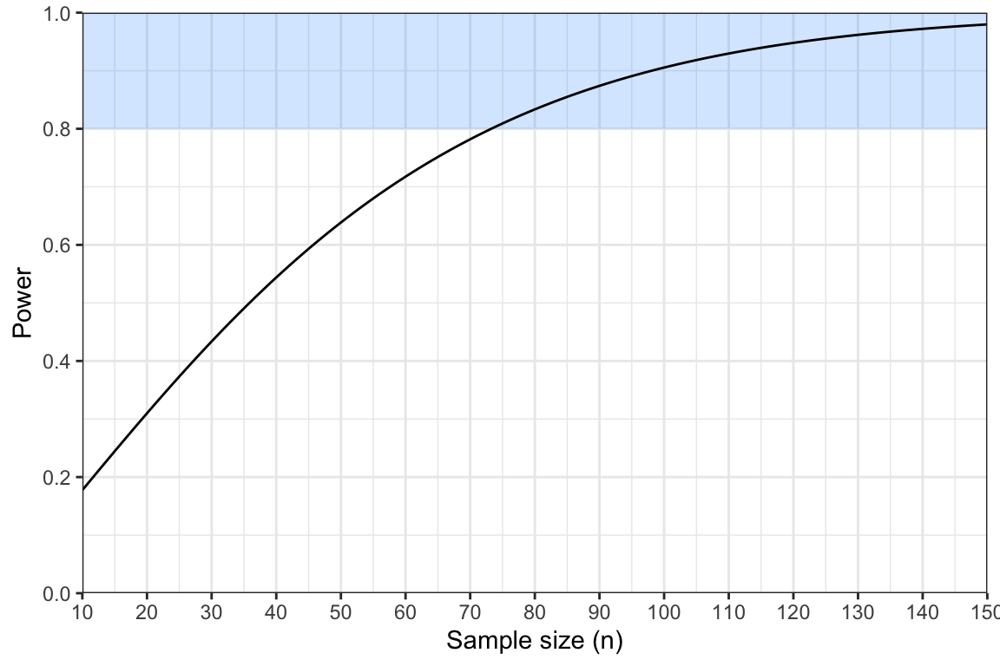
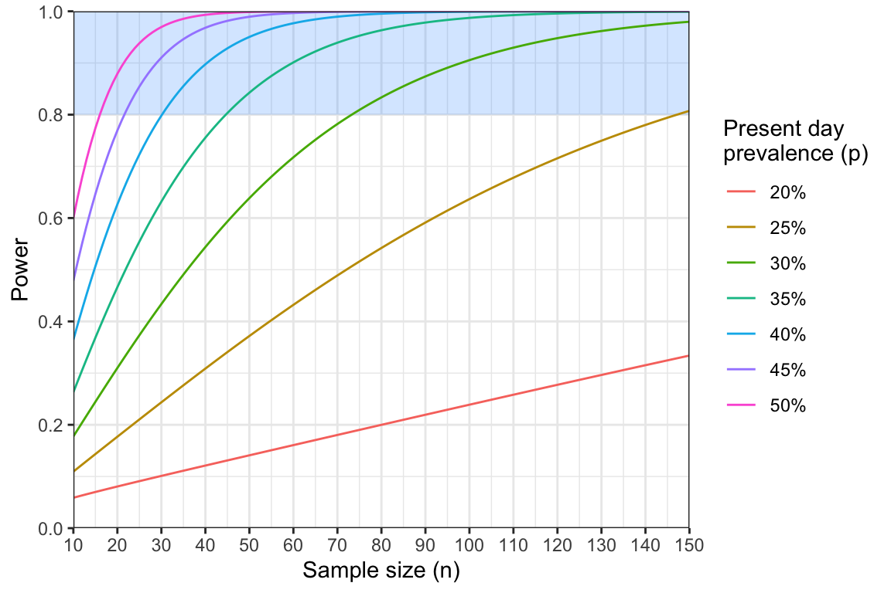

QUIZ - Hypothesis testing and power
Activity 3: Hypothesis Testing and Power
Introduction
Welcome to Activity 3: Hypothesis Testing and Power
In this activity, we introduce the concept of statistical power and demonstrate its connection to null hypothesis testing. In many studies within malaria molecular surveillance, we aim to test specific hypotheses. For instance: Has the prevalence of drug resistance mutations increased over the past five years? Are certain genetic variants linked to gender, or occupation? Does treatment efficacy vary based on genetic markers? Each of these questions can be framed as a null hypothesis test. This leads us to a crucial question: given that a real effect exists, how likely are we to detect it? Statistical power is the mathematical way to evaluate how likely we are to detect this real effect. We’ll explore these concepts using two examples: comparing drug resistance prevalence against a known value and detecting rare genetic variants
Learning Outcomes
By the end of this tutorial, you will be able to:
- Define key terms related to null hypothesis testing.
- Use a test statistic to decide whether or not to reject a null hypothesis.
- Perform power analysis using two different statistical tests.
- Interpret power curves.
- Use minimum sample size tables.
Disclaimer: The scenarios in this document are entirely fictitious. While real place names are used, the data itself is artificial and designed for teaching purposes only. It does not necessarily represent the real epidemiological situation in these locations.
Quiz on hypothesis testing and power
Well done on completing this quiz! We will now put some of these ideas into practice.
Testing for changes in molecular markers of drug resistance over time
You are a local health minister working in the Gombe region of Nigeria. You are concerned that the prevalence of antimalarial resistance may be increasing in Gombe city, the capital of Gombe state. A study conducted three years ago found that the prevalence of pfmdr1 N86Y mutations was 15%. You plan to conduct a new study to determine if there has been a significant change in the prevalence of N86Y mutations over this three year period.
To simplify our analysis, we will assume the estimate of 15% prevalence three years ago is exactly correct. This means we are comparing a sample in the present day against a single known value. The appropriate statistical test here is the one-sample z-test for proportions.
QUIZ - Null hypothesis under the z-test
The test statistic under the z-test is given by:
\[ Z = \frac{\hat{p} - p_0}{\sqrt{\frac{\hat{p}(1 - \hat{p})}{n}}} \]
where \(p_0\) is the value we are comparing against (in our case \(p_0 = 0.15\)). If the null hypothesis is true, and the prevalence is indeed \(p_0\), then \(Z\) should follow a standard normal distribution. This means there is only a 5% chance that we will see values greater than \(+1.96\), or less than \(-1.96\).
But what if the null hypothesis is false? We can explore this question by specifying an alternative hypothesis. To do this, we need to specify a known prevalence in the present day, which we will call \(p\). We will be pessimistic and assume that the prevalence has doubled over the three year period from \(p_0=0.15\) to \(p=0.30\).
Given these values, we can calculate the expected value for our test statistic under the alternative hypothesis: \[ E[Z] = \frac{|p - p_0|}{\sqrt{\frac{p(1-p)}{n}}} \] The vertical lines around \(|p - p_0|\) indicate that we should take the absolute value of the difference. This ensures that \(E[Z]\) is always positive.
Complete the following R code to calculate the value of \(E[Z]\), assuming a sample size of \(n = 150\).
# input parameters
p0 <-
p <-
n <-
# calculate absolute value of difference in prevalence
p_diff <- abs(p - p0)
# calculate the standard error
SE <- sqrt(p*(1 - p) / n)
# calculate the expected value of the statistic
E_Z <-
print(E_Z)# input parameters
p0 <- 0.15
p <- 0.3
n <- 150
# calculate absolute value of difference in prevalence
p_diff <- abs(p - p0)
# calculate the standard error
SE <- sqrt(p*(1 - p) / n)
# calculate the expected value of the statistic
E_Z <- p_diff / SE
print(E_Z)Click to see the answer
You should find that \(E[Z}] = 4.01\).
This means that on average we should expect our test statistic to equal \(4.01\) if the alternative hypothesis is true.
We can use \(E[Z]\) to tell us our power. The formula for power under the z-test is:
\[ \text{Power} = 1 - \phi(z_{1-\alpha/2} - E[Z]) \]
\(\phi()\) in this formula refers to the area under the curve of a standard normal distribution. There is no simple way of calculating this value, but we can obtain it easily in R using the pnorm() function. As in previous activities, the value \(z_{1 - \alpha/2}\) refers to the critical value of the normal distribution at a significance level \(\alpha\) (two-tailed), which is approximately equal to 1.96.
Complete the following R code to calculate the power under the planned study design. You still have access to the variable E_Z from before in this code chunk:
# calculate power using the known value of E_Z
z_alpha <- 1.96
power <- # hint, you will need to use the pnorm() function here
print(power)# calculate power using the known value of E_Z
z_alpha <- 1.96
power <- 1 - pnorm(z_alpha - E_Z)
print(power)Click to see the answer
You should find that \(\text{Power} = 0.98\).
QUIZ - Interpreting power
Using power curves
Our current study design has 98% power. We normally aim for at least 80% power, meaning this study is adequately powered. In fact, we could argue that it is over-powered, meaning we could get away with using fewer samples and still have a good chance of detecting a real effect.
We can use power curves to explore how power changes as a function of sample size. In the plot below, the region with at least 80% power is shaded in blue.

QUIZ - Reading off power curves
The power analysis indicates that we may not need to sequence 150 samples after all. However, it did make the rather pessimistic assumption that prevalence has doubled from 15% to 30% over the three year period. It would be useful to repeat this analysis, exploring different assumptions about the prevalence. One way to do this is via a series of power curves:

Even a slight change in our assumption about the prevalence of N86Y mutations has a large effect on power. If we assumed present-day prevalence was 25% rather than 30% then we would need close to 150 samples to achieve 80% power. This analysis was useful for exploring the exact relationship between sample size and power. However, it can be fiddly to read values off the power curve to find the exact point at which it crosses the 80% threshold. This is where sample size formulae and sample size tables come in handy.
Using sample size tables
Recall that power under the one-sample z-test for proportions is given by \[ \text{Power} = 1 - \phi\left(z_{1-\alpha/2} - \frac{|p - p_0|}{\sqrt{\frac{p(1 - p)}{n}}} \right) \] In an earlier module we rearranged the formula for the Wald confidence interval to arrive at a new formula in terms of the sample size \(n\). Here, we want to do exactly the same thing, just with a more complicated formula! We won’t walk through the steps of rearranging this formula, but take my word for it that this can be rearranged to produce: \[ n = (z_{1 - \alpha/2} + z_{1 - \beta})^2\frac{p(1 - p)}{(p - p_0)^2} \] The only unfamiliar term here is \(z_{1 - \beta}\), which is the area under the curve of the standard normal distribution up to the value \(1 - \beta\). The parameter \(\beta\) is defined as one minus our power. Typically \(\beta = 0.2\) because target power is usually 80%.
The following R code implements this sample size formula. Have a play around with this code. Try changing the value of p and see what happens to the minimum sample size. Do you obtain the value \(n=74\) when \(p=0.3\), like we found from the power curve? Remember that you should always round sample sizes up if they are non-integers. What happens to the sample size as p gets closer to the 15% threshold?
# define our assumed values
p0 <- 0.15
p <- 0.30
# define the two z parameters
z_alpha <- 1.96
z_beta <- qnorm(0.8)
# calculate the minimum sample size
(z_alpha + z_beta)^2 * p*(1 - p) / (p - p0)^2One of the nice things about sample size formulae is that we can use them to produce tables of minimum sample sizes. Table 1 shows the minimum sample size required to achieve 80% power under different assumptions about the prevalence of N86Y mutations:
| Assumed present-day prevalence of N86Y mutation | Sample size |
|---|---|
| 20% | 503 |
| 25% | 148 |
| 30% | 74 |
| 35% | 45 |
| 40% | 31 |
| 45% | 22 |
| 50% | 17 |
Table 1: minimum sample sizes under various assumptions about present-day prevalence |
Tables like this allow us to scan across values and work out what sample size is needed under different statistical assumptions, and to cross-reference this against what is achievable.
Reflection:
What sample size would you opt for in this case? What factors could help you decide on a reasonable assumption for the present day prevalence of N86Y mutations? What factors could help constrain the sample sizes that are feasible?
Detecting rare variants
Building on the success of your N86Y study in Gombe city, you have been invited to conduct a new study focused on identifying pfk13 mutations in the nearby town of Pindiga. This study will target WHO validated mutations that are known to be associated with partial resistance to artemisinin. Instead of estimating the prevalence of these mutations, your goal is simply to determine whether any of these mutations are present in the population.
Your plan is to test individuals who present with malaria symptoms at a local health facility. For those who test positive for malaria, dried blood spots will be collected and subsequently sent for sequencing. However, due to limited resources, you are only able to sequence 100 samples.
The question, is: with a sample size of only 100, is it worthwhile to pursue this study?
Framing the problem as a hypothesis test
This type of detection study can be framed as a null hypothesis test. The null hypothesis is that there are no WHO-validated mutations present in the population. In other words, the prevalence of these mutations is zero. Even a single observation of a WHO-validated mutant would disprove this null hypothesis. Therefore, unlike most statistical tests, there is no test statistic to calculate here. Instead, we simply reject the null hypothesis if we see a single sample containing a WHO-validated mutant.
It is straightforward to calculate power under this test. We start by assuming a known prevalence, \(p\), for the validated mutations. We can derive the power in the following steps:
Step 1: Chance of a single negative result:
The probability that a single sample is negative (i.e. does not carry a validated pfk13 mutation) is given by: \[ \text{Pr}(\text{Negative}) = 1 - p \] Step 2: Chance of two negative results:
The probability of two negative samples is the probability of one negative sample multiplied by the probability of another negative sample: \[ \begin{align} \text{Pr}(\text{Two negatives}) &= (1 - p)(1 - p) \\ &= (1 - p)^2 \end{align} \]
Step 3: Chance of \(n\) negative results:
The probability that all \(n\) samples are negative is the probability of one negative sample raised to the power \(n\): \[ \text{Pr}(n \text{ negatives}) = (1 - p)^n \] This assumes that samples are drawn independently from a much larger population.
Step 4: Chance of at least one positive result:
The chance of seeing at least one positive sample is equal to one minus the probability of seeing no positive samples. If we see a positive sample then we reject the null hypothesis. Hence, this is also our power:
\[ \text{Power} = 1 - (1 - p)^n \] This very simple expression can be used to guide our study design.
Complete the following R code to implement this formula. What is our power if we assume a prevalence of 5%?
# define parameters
p <-
n <-
# calculate power
power <-
print(power)# define parameters
p <- 0.05
n <- 100
# calculate power
power <- 1 - (1 - p)^n
print(power)Click to see the answer
You should find that \(\text{Power} = 0.994\) if we assume a prevalence of \(p = 0.05\).
QUIZ - Interpreting power
Based on this result, we are over-powered to detect pfk13 mutants. This gives us the freedom to reduce the sample size. So, how many samples are needed? Rearranging our power formula in terms of \(n\) we obtain: \[ n = \frac{\text{log}(1 - \text{Power})}{\text{log}(1 - p)} \]
Complete the following R code to implement this sample size formula. What minimum sample size is needed if we assume a prevalence of 5% and we are aiming for 80% power?
# define prevalence
p <-
# calculate minimum sample size
n <-
print(n)# define prevalence
p <- 0.05
# calculate minimum sample size
n <- log(1 - 0.8) / log(1 - p)
print(n)Click to see the answer
You should find that \(n = 31.38\), which would be rounded up to \(n = 32\).
This is a very promising result - we can definitely run a well-powered study within our resource constraints! However, we did make the fairly pessimistic assumption that validated pfk13 mutants are at 5% prevalence in the population. In reality, we may want to catch them before they reach 5% in order to take pre-emptive measures. Again, we can consult a sample size table (Table 2):
| Assumed prevalence of pfk13 mutations | Sample size |
|---|---|
| 0.1% | 1609 |
| 0.5% | 322 |
| 1% | 161 |
| 2% | 80 |
| 3% | 53 |
| 4% | 40 |
| 5% | 32 |
Table 2: minimum sample sizes needed to achieve 80% power under various assumptions about pfk13 mutation prevalence |
Reflection:
Based on the values in Table 2, do you think it is worthwhile to conduct this study? If you ran a study that was powered down to 2% prevalence (80 samples) and did not find any pfk13 mutants, would you be reassured by this result?